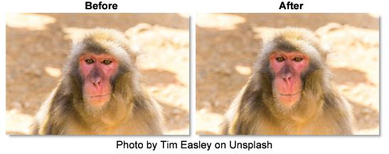
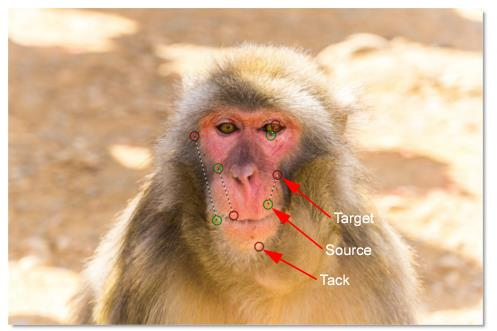
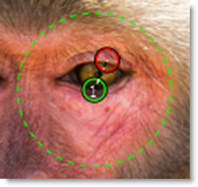

Pin Warp
Description
Pin Warp allows you to warp specific image areas using pins, while leaving other areas untouched. Adjustments can range from subtle nip and tucks to something more obvious like repositioning an arm or leg.
Go to the
Pin Based Warping tutorial to see how it works.
Node Group
Warp.
Controls
Transform
Selects point trackers and tracked layers from the input Tracker node and match moves the pins based on the input tracker data.
Pin 1 - 20
A total of 20 pins can be added to an image. To create a pin, click-drag on the image. Pins have a source (green circle) and target (red circle). The farther the target is dragged from the source, the more the image warps. Click-releasing on the image sets a tack which constrains the warp.
Pin and Tack Radius
Each pin and tack has a radius which determines its strength. Hover over a pin to display the radius. Shift-drag the radius to adjust it.
Pin Warp Keyboard Shortcuts
Shortcut | Action |
|---|
Click-drag on image | Creates a pin |
Click-release on image | Creates a tack |
Click-drag pin source or target | Moves the pin source or target |
Shift-drag pin source or target | Moves both the pin source and target |
Ctrl/Cmd-drag pin radius | Adjusts pin radius with all radii displayed |
Hover over pin, Shift-drag pin radius | Adjusts pin radius with only selected pin radius displayed |
Alt-drag on a tack | Converts a tack to a pin |
Right-click > Remove Pin | Deletes the pin |
Right-click > Make Tack | Converts a pin to a tack |